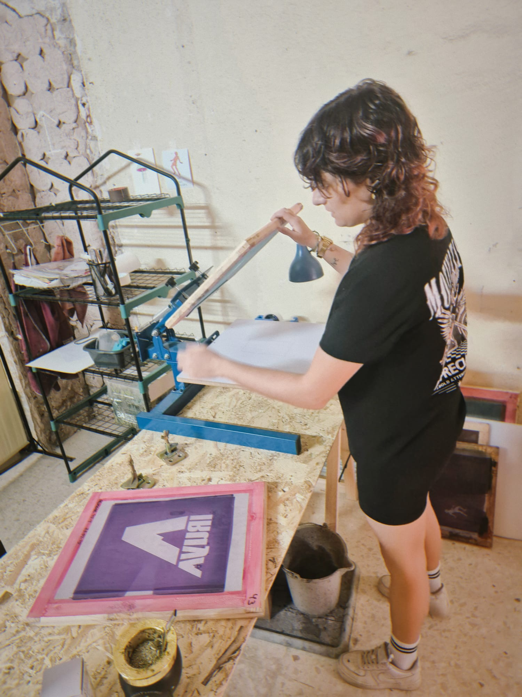
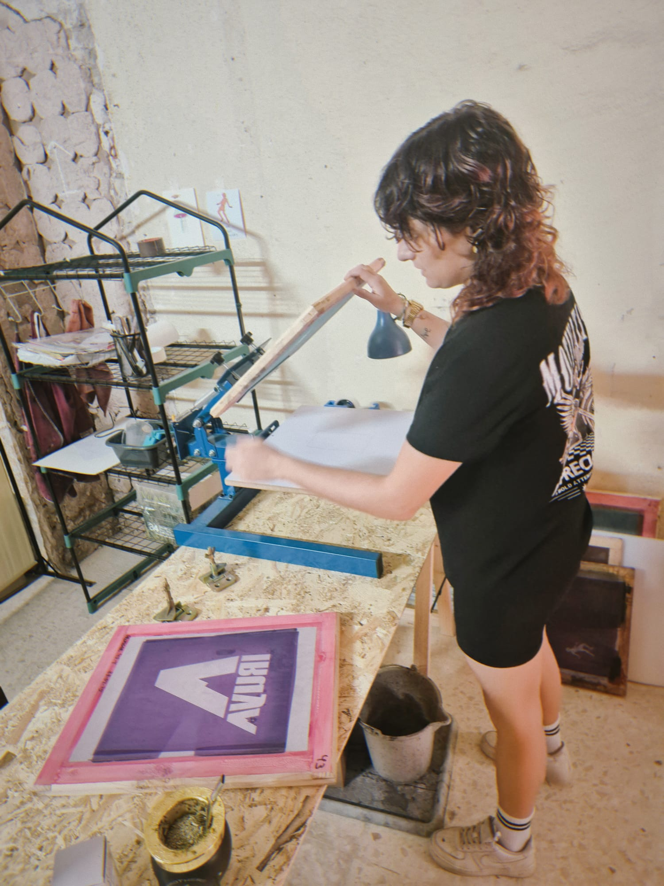

Hola! bienvenid@s a Sala Tres. Aquí encontrarán un espacio colaborativo de creación en el corazón de La Petxina, Valencia, destinado a artistas plásticos, audiovisuales, diseñador@s, artesan@s, ilustrador@s, talleristas y demás personas vinculadas a ámbitos culturales, artísticos y tecnológicos.
Sala Tres nace ante la necesidad de un punto de encuentro físico de exploración y creación en una zona de la ciudad que está en pleno proceso de transformación cultural.
En el mismo barrio encontrarán al Centro Cultural Juby, un espacio que viene a darle una nueva impronta a esta zona de la ciudad ofreciendo distintas propuestas socio culturales.
En Sala Tres contarán con espacios individuales de creación así también como espacios en común que permitirán generar un ámbito de conexiones con otras personas de diferentes ámbitos artísticos y culturales.
Contamos con WIFI, mesas, veladores, zona de vestuarios, refrigeradora, cafetera y utensillos de cocina.


 

Nuestro horario de apertura: Lunes a Viernes de 09:00hs a 22:00hs.
Estamos ubicados cerca de la estación de metro Ángel Guimerá y la Gran Vía de Fernando el Católico.
Para más información escribenos a espaciosalatres@gmail.com o encontranos en WhatsApp: +34 634 251 216.
Hecho con ❤️ en La Petxina
Hello! Welcome to Sala Tres. Here you will find a collaborative creative space in the heart of La Petxina, Valencia, designed for visual artists, audiovisual creators, designers, artisans, illustrators, workshop leaders, and anyone connected to cultural, artistic, and technological fields.
Sala Tres was born from the need for a physical meeting point for exploration and creation in a neighborhood that is undergoing a cultural transformation.
In the same neighborhood you will find the Juby Cultural Center, a space that brings fresh energy to the area with a variety of socio-cultural activities.
At Sala Tres you will have access to individual creative studios as well as shared areas that encourage connections with people from diverse artistic and cultural backgrounds.
We offer Wi-Fi, tables, lamps, a changing area, refrigerator, coffee maker, and kitchen utensils.
Opening hours: Monday to Friday from 09:00 to 22:00.
We are located near Ángel Guimerá metro station and Gran Vía de Fernando el Católico.
For more information, write to us at espaciosalatres@gmail.com or reach us on WhatsApp: +34 634 251 216.
Made with ❤️ in La Petxina